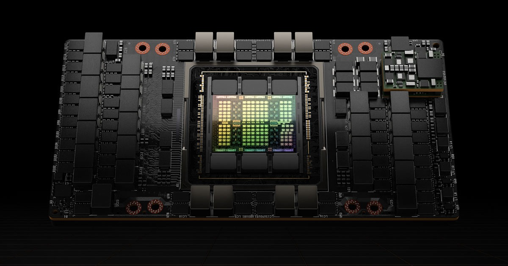
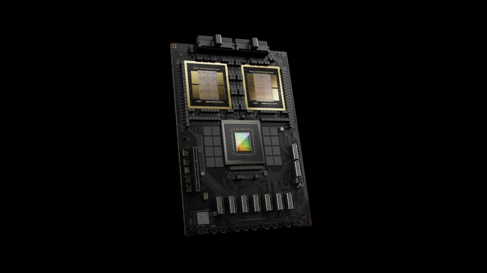
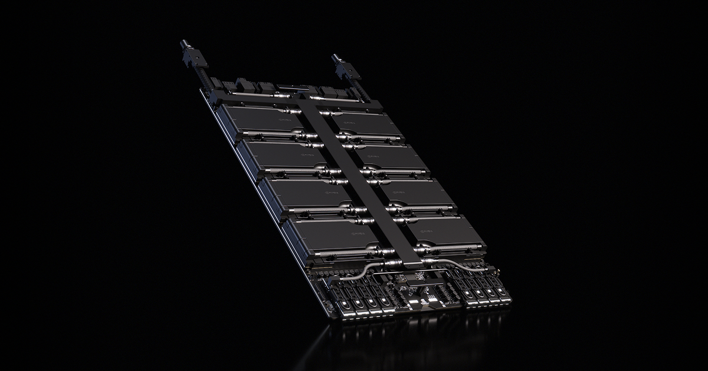

Blackwell GPU Fingerprints and Washington’s Remote Access Crackdown
After checkpoint forensics showed that DeepSeek, Moonshot AI, MiniMax, and Ant Group initialized their newest frontier models on export-controlled Nvidia Blackwell chips, a divided Trump administration is moving to seal the overseas data-centre loophole—and putting five transit hubs on notice.

B200 processor package (Export Control Classification Number, or ECCN, 3A090.a), fusing two reticle-limit Taiwan Semiconductor Manufacturing Company (TSMC) logic dies (148 active Streaming Multiprocessors, or SMs) flanked by eight stacks of High-Bandwidth Memory (HBM, ECCN 3A090.c).
Source: Nvidia Newsroom
On June 12th 2025 Chenggang Zhao, a systems engineer at the Hangzhou artificial-intelligence laboratory DeepSeek who posts on GitHub under the handle LyricZhao, left a terse note on pull request #112 in the company’s open-source deepseek-ai/DeepGEMM code repository: “We don’t have SM100 GPUs.” In Nvidia’s internal shorthand, SM100 stands for Blackwell, the chipmaker’s newest and most powerful generation of graphics processing units, or GPUs. Under American export controls imposed in October 2022 and tightened a year later, neither DeepSeek nor any other firm in China was supposed to lay hands on them.
For Washington’s national-security establishment, keeping those chips out of China was not merely a trade dispute. It was the central bet of American AI strategy: that denying Beijing frontier silicon would preserve an enduring technological lead for the United States and its allies. When DeepSeek’s engineers publicly admitted they lacked Blackwell hardware, hawks in Washington took it as a sign the blockade was holding.
That confidence soon cracked. Within months, Chinese laboratories released a wave of models whose capabilities rivalled Silicon Valley’s best, triggering alarm inside the White House and a bitter internal debate over whether the export regime was leaking or simply obsolete. On December 10th 2025, The Information reported that DeepSeek was developing its next-generation model on several thousand restricted Blackwell chips routed through third-country data centres.
Two months later, on February 23rd 2026, Reuters correspondents Steve Holland and Alexandra Alper reported that a senior American official had accused DeepSeek of training an upcoming model on a Blackwell cluster inside Inner Mongolia. The claim exposed deep divisions inside the Trump administration itself, pitting sceptics such as White House AI Czar David Sacks and Nvidia chief executive Jensen Huang—who questioned whether hardware bans could stop determined rivals—against security hawks demanding tougher enforcement.
Soon the paper trail pointed beyond China’s borders to booming cloud corridors across Southeast Asia. In March 2026, Wall Street Journal reporters Jon Emont and Liza Lin revealed that roughly 36,000 Blackwell B200 chips worth more than $2.5bn were being installed in Malaysia, through infrastructure partner Aolani Cloud, for TikTok’s Beijing-headquartered parent ByteDance. Then on July 22nd, Bloomberg reported that Michael Kratsios, Director of the White House Office of Science and Technology Policy, had publicly accused Beijing startup Moonshot AI of training its 2.8-trillion-parameter Kimi K3 model on Blackwell GB300 servers accessed through Thailand, alongside claims of large-scale distillation against Anthropic’s Fable model. Treasury Secretary Scott Bessent warned that sanctions and enforcement actions were “on the table”.
Yet for all the public recriminations, Washington produced no technical evidence tying Chinese frontier models to Blackwell silicon. That silence left cloud operators, chipmakers, and investors guessing whether the allegations rested on intelligence or speculation.
On November 12th 2026, Will DePue, a researcher at Unemployment Labs, supplied the missing forensic link (Unemployment Labs report; post on X). Working solely from publicly released model weights—the billions of adjustable parameters that govern a neural network’s behaviour—Mr DePue found compelling statistical signatures that six frontier models released since April 2026 by DeepSeek, Moonshot AI, MiniMax, and Ant Group were initialized on export-controlled Blackwell hardware. Across five training runs, he estimated, those four Chinese labs had tapped roughly 12,000 Blackwell GPUs, the computational equivalent of 30,000 previous-generation Nvidia H100 chips, representing more than half a billion dollars in silicon for the final runs alone.
“The weights also cannot reveal who owned the chips or where they were located. Blackwell systems can be rented from data centers outside China. The evidence concerns access to the hardware; by itself, it does not establish that chips were smuggled into China or that an export-control violation occurred.”
Three days later, Washington moved to render that distinction moot. On November 15th, the Department of Commerce’s Bureau of Industry and Security, or BIS, issued a 132-page Interim Final Rule, abbreviated IFR, titled Addressing Remote Access to Advanced Semiconductors and carrying Regulation Identifier Number RIN 0694-AK50. Taking effect immediately upon Federal Register publication with a 60-day comment window, the rule overhauls the Export Administration Regulations—the EAR—that govern American dual-use trade.
The rule’s origins reflect the intense bureaucratic struggle behind the scenes. Trade lawyers at WilmerHale—including partners Joshua Geltzer, David Horn, Barry Hurewitz, Marik String, and Neena Shenai—noted in a November 17th legal alert that when BIS unveiled the regulation under Under Secretary Jeffrey Kessler’s signature, its announcement took the extraordinary step of declaring the rule “written by and at the direction of the Department of Treasury and the National Security Council”. Seldom has an export-control agency distanced itself so pointedly from its own text.
For data-centre landlords from Johor and Bangkok to São Paulo, the stakes are immediate. Firms that invested billions on the assumption that renting cloud compute across borders was lawful now have 90 days to secure a Washington license or pull the plug on Chinese clients. Even the legal lexicon has been recast: under Executive Order 14434, Inaugurating the Era of Super Intelligence, the rule scrubs “Artificial Intelligence” from the new text in favour of “Super Intelligence”, or SI.
Beneath that rebranding sits a four-part strategy. First, the rule imposes a worldwide end-use ban on overseas data centres supplying frontier-scale compute to Chinese and other arms-embargoed entities, carving out only non-generative recommendation engines. Second, it wraps five fast-growing transit hubs—Indonesia, Malaysia, Singapore, Brazil, and Thailand—in new shipping-license requirements, sparing only American-headquartered buyers whose suppliers file monthly reports. Third, it tightens gatekeeping at semiconductor foundries and chip packagers. Finally, it buries the Biden administration’s suspended “AI Diffusion Rule” once and for all.
The ghost in the weights: how 148 and 152 cores gave the game away
To understand why Treasury and the National Security Council forced BIS into the cloud, it helps to see what Mr DePue found inside China’s open weights.
Before a neural network can learn from training data, its billions of parameters need random starting numbers. In PyTorch, the open-source framework behind most frontier models, Nvidia’s cuRAND software library generates those numbers using a deterministic algorithm called Philox. Feed Philox the same starting integer—a “seed”—and it yields the exact same sequence every time.
To fill billions of weights in fractions of a second, PyTorch spreads Philox’s workload across parallel worker threads on the GPU, assigning up to 2,048 threads to each Streaming Multiprocessor, or SM—the physical compute cores on an Nvidia chip. Thread 0 fills position 1, thread 1 fills position 2, and so on across all N threads on the chip; thread 0 then loops back to position N + 1, then 2N + 1.
Because each Nvidia chip family packs a different number of cores, that spatial stride stamps the weights with a distinct hardware birthmark. Hopper chips—the H100 SXM, H200, and China-compliant H800—have 132 SMs, giving 270,336 threads. Blackwell B200 and B300 chips have 148 SMs, giving 303,104 threads. Grace-Blackwell GB200 and GB300 superchips have 152 SMs, giving 311,296 threads.

H100 SXM GPU shares a 132-SM, 270,336-thread initialization signature with the H200 and the China-modified H800 found in pre-April 2026 Chinese models such as DeepSeek-V3 and Kimi K2.5.
Source: Nvidia

GB200 Grace Blackwell Superchip pairs two 152-SM Blackwell GPUs—311,296 threads each, matching DeepSeek-V4-Pro, Moonshot AI’s Kimi K3 and K3.1-Pro, and Ant Group’s Ling-3.1-flash—with an Arm-based Grace central processing unit, or CPU.
Source: Nvidia Newsroom
Training does not erase this starting pattern. Vocabulary rows reserved for symbols that never appear during training stay untouched, preserving their initial values bit for bit. Even in heavily trained layers, higher starting values still correlate slightly with higher final values across millions of parameters, registering a correlation of r = 0.066—57 standard deviations, or 57σ—across 42 layers of DeepSeek-V4-Flash.
Scanning roughly 6 trillion combinations of 32-bit seeds and thread layouts, where random noise should reach at most 8σ, Mr DePue’s team tested their method against 24 control models with publicly disclosed hardware. Every single reading matched, from Meta’s Llama 3.1 on 132-SM H100s and EleutherAI’s Pythia models on 108-SM A100s to Zyphra’s ZAYA1 on 304-unit AMD MI300Xs and Nvidia’s own Nemotron-3 Ultra on 152-SM GB200s. On China’s post-April 2026 releases, the Blackwell matches soared between 49σ and 1,385σ on held-out weights.
Hardware initialization fingerprints in successive Chinese frontier models
| Chinese AI Lab | Pre-April 2026 Models (132-SM Hopper Layout) | Post-April 2026 Models (Blackwell Layout) | Matched Hardware Class | Estimated Cluster Scale (Blackwell GPUs / H100 Equiv.) |
|---|---|---|---|---|
| DeepSeek | DeepSeek-V2, DeepSeek-V3 (Dec 2024; seed 953049583) |
DeepSeek-V4-Flash (Apr 2026; same seed 953049583) |
148 SMs: Nvidia Blackwell B200 / B300 |
~1,500 Blackwells (~3,500 H100 equiv. over 50 days) |
| DeepSeek | (see above) | DeepSeek-V4-Pro (Apr 2026) |
152 SMs: Nvidia Grace-Blackwell GB200 / GB300 |
~3,000 Grace-Blackwells (~7,500 H100 equiv. over 70 days) |
| Moonshot AI | Kimi K2 (Jul 2025), Kimi K2.5 (Jan 2026); plus Jun 2026 K2.7-Code with an 80% Hopper / 20% 148-SM blend |
Kimi K3 (Jul 2026; seed 20256586) & Kimi K3.1-Pro (Nov 2026) |
152 SMs: Nvidia Grace-Blackwell GB200 / GB300 |
~4,500 Grace-Blackwells (~11,500 H100 equiv. over 70 days) |
| MiniMax | MiniMax-Text-01 through MiniMax-M2.7 (Apr 2026) |
MiniMax-M3 (Jun 2026) & M3.1-Flash (Oct 2026) |
148 SMs: Nvidia Blackwell B200 / B300 |
~1,500 Blackwells (~3,500 H100 equiv. over 60 days) |
| Ant Group | Ling-1T (Oct 2025), Ling-3.0-flash (Aug 2026) |
Ling-3.1-flash (Oct 2026), corroborated by Mar 31, 2026 BENCHMARK_GB300.md in Ant’s inclusionAI/cuLA repo |
152 SMs: Nvidia Grace-Blackwell GB200 / GB300 |
~1,500 Grace-Blackwells (~4,000 H100 equiv. over 100 days) |
Source: Will DePue, Unemployment Labs (Nov 12, 2026). Cluster estimates assume ~20% utilization of peak floating-point operations per second, or FLOPS (25% for DeepSeek), over final training runs only. Readable weights from Alibaba’s Qwen3.8, Zhipu’s GLM-5.3, Tencent’s Hy4-preview, Xiaomi’s MiMo-V2.5-Pro, and StepFun’s Step-5-Preview still show 132-SM Hopper signatures; Meituan’s LongCat-2.0 shows no Nvidia signature and cites custom AI Application-Specific Integrated Circuits, or ASICs, with a deleted configuration pointing to Huawei Ascend 910 chips.
Physical tests sealed the finding. Feeding DeepSeek’s seed, 953049583, into unmodified PyTorch on an H100 reproduced all 57,344 preserved values of DeepSeek-V3 bit for bit. Running the same seed on a Blackwell B300 reproduced 445 full preserved rows of DeepSeek-V4-Flash bit for bit. On a rented GB200, Moonshot’s seed regenerated all 13 preserved rows of Kimi K3.
The team even checked whether a partitioned AMD MI300X—an export-controlled rival chip that normally uses 304 compute units—could mimic a 148- or 152-SM Blackwell layout. Across 377 floating-point values where the two vendors round slightly differently, DeepSeek-V4-Flash matched Nvidia 363 times and AMD zero.
Pillar 1: Extending export controls to cloud “remote access”
Whether those four Chinese labs trained on smuggled servers inside China or over fibre-optic cables to Thailand and Malaysia, Washington’s old rulebook had a glaring blind spot.
Historically, BIS policed physical goods and data crossing borders: exports out of the United States, reexports between foreign countries, and in-country transfers from one end use or user to another. In prior guidance, the agency explicitly advised that providing computational capacity as a cloud service fell outside the EAR because no commodity, software, or technology was shipped to the user.
Doubting it held the authority under the Export Control Reform Act of 2018, known as ECRA, BIS had spent years lobbying Congress to pass the Remote Access Security Act to close that cloud gap. Congress never passed the bill. Nudged by Treasury and the National Security Council, BIS asserted the power anyway—a reversal that WilmerHale warns tests the statutory boundaries of ECRA.
How the 12,000,000 aggregate TPP threshold works
Strikingly, the IFR never defines “remote access”. Instead, it regulates the underlying silicon before and after installation. Exporters and intermediaries may not send controlled SI hardware, software, or technology without a license if they possess “knowledge”—which under the EAR includes awareness of a high probability or willful blindness—that a data centre anywhere on Earth will supply more than 12,000,000 “aggregate TPP” of computing power to or for an entity headquartered, or with an ultimate parent headquartered, in Macau or Country Group D:5, Washington’s roster of two dozen arms-embargoed nations including China, Russia, Iran, Belarus, and North Korea.
Those compute limits rely on BIS’s Total Processing Performance, or TPP, metric—calculated as twice a chip’s peak tera multiply-accumulate operations per second, MacTOPS, multiplied by bit length. On the Commerce Control List, or CCL, controlled hardware carries five-character Export Control Classification Numbers, or ECCNs.
The centerpiece entry, ECCN 3A090, covers flagship datacentre chips such as Nvidia’s H100, B200, B300, GB200, and GB300 under 3A090.a—chips hitting 4,800 TPP or more, or 1,600 TPP with high compute density—alongside mid-tier accelerators under 3A090.b. High-Bandwidth Memory, or HBM, classified under 3A090.c, is excluded from the new remote-access ban. The restriction sweeps in servers and accelerator boards under ECCN 4A090, related networking and security items tagged with .z suffixes—3A001.z, 4A003.z, 4A004.z, 4A005.z, 5A002.z, 5A004.z, 5A992.z, 5D002.z, and 5D992.z—and their associated development software and technical know-how under 3D001, 4D001, 4D090, 3E001, 4E001, 5E002, and 5E992.

GB200 NVL72 rack (ECCN 4A090.a) links 72 Blackwell GPUs and 36 Grace CPUs as a single unified accelerator. Just five to ten such racks cross Washington’s new 12,000,000 aggregate TPP remote-access limit.
Source: Nvidia Newsroom
Aggregate TPP simply sums the TPP of all controlled chips or servers in a cluster. As WilmerHale points out, 12,000,000 aggregate TPP is a strikingly low tripwire—less than half the volume exporters could ship license-free as a “low-volume” order under the scrapped AI Diffusion Rule. On modern Blackwell B200 or GB200 processors, 12m aggregate TPP means roughly 300 to 750 chips. Every single Chinese Blackwell run identified by Mr DePue clears that bar several times over.
Five legal hooks make the restriction nearly impossible to route around. First, unlike the rule’s shipping controls for Southeast Asia and Brazil, the remote-access ban contains no carve-out for overseas data centres operated by American-headquartered companies. A U.S. hyperscaler running clusters in Frankfurt, Tokyo, or Johor faces the exact same 12m-TPP cap when serving Chinese clients as any local landlord.
Second, cloud operators cannot split a Chinese training job across separate halls or campuses. The 12m-TPP limit aggregates compute across “linked data centres”—any two or more facilities joined by physical or digital networking infrastructure to share resources, balance workloads, and replicate data as a unified whole.
Third, the rule reaches middlemen and codifies an earlier 50% threshold. It bars serving a non-D:5 customer if the data centre knows that customer is training SI models for, or supplying models to, a D:5 or Macau firm. In a companion update to existing advanced-chip end-use controls, BIS codifies its May 31st 2026 guidance barring shipments outside national-security Country Groups D:1 and D:4, arms-embargoed Group D:5, and close-ally Groups A:5 and A:6 whenever a D:5 or Macau entity is the buyer or the exclusive or primary remote end user consuming more than 50% of total compute. Companies already out of compliance are bluntly invited to file a Voluntary Self-Disclosure, or VSD, to mitigate penalties.
Fourth, changing clients mid-stream now counts as a regulated export. If a foreign data centre buys servers lawfully and later switches them to providing more than 12m aggregate TPP to a D:5 client, that pivot legally constitutes an in-country transfer requiring a BIS license—even if the operator had no part in importing the gear. Shippers moving hardware without a license must also warn recipients in writing of this obligation and instruct them to follow BIS’s Know Your Customer, or KYC, vetting standards.
Finally, silence counts as guilt. Suppliers must obtain documentation of a foreign data centre’s KYC checks into direct or indirect Macau or D:5 ownership; if a facility refuses or cannot verify compliance, that stonewalling triggers a “red flag” that presumptively establishes knowledge of a violation. Nor can foreign server builders hide behind the EAR’s de minimis rules, which normally exempt foreign-made products containing small shares of American content, whenever they know a server is headed for a banned data-centre use.
The 90-day ultimatum and the “commercial recommender” contradiction
In May 2026, BIS told legitimate data-centre operators they could keep using already-installed hardware “until further notice”. That grace period is over. Any facility already providing a “significant volume of compute power” to Macau or D:5 firms before the rule’s publication has 90 days to secure a BIS license or cut them off.
To spare consumer apps—such as ByteDance’s Malaysian buildout for TikTok or overseas servers run by Chinese e-commerce giants—the IFR exempts compute supplied exclusively for a “commercial recommender system” that ranks, filters, or suggests products, services, or content based on user behaviour or item attributes. That relief comes with a strict poison pill: the system must not generate novel text, images, audio, video, software, or other content, nor incorporate a generative model. Providers relying on the carve-out must file client names, total TPP, and KYC diligence via BIS’s portal (bis.gov/ai/exclusionnotesubmission) for review by the interagency End-User Review Committee, or ERC.
Per-customer vs. facility-wide TPP: The regulatory text bars supplying more than 12m aggregate TPP “to or for companies” in Macau or D:5—leaving unclear whether a data centre triggers the cap only when a single D:5 client crosses 12m TPP, or when all D:5 clients combined do.
Undefined “significant” compute: The 90-day licensing clock applies to data centres already supplying a “significant volume of compute power,” without defining “significant” or specifying which prohibition the new licenses authorize against.
A glaring contradiction on recommender systems: While the commercial recommender exception states that the remote-access ban does not apply once reported to BIS, the preamble warns that facilities serving recommender systems remotely have 90 days “but must obtain a license following expiration of this period to continue these services.”
Pillar 2: The Gang of Five—Indonesia, Malaysia, Singapore, Brazil, and Thailand
If the remote-access ban polices who logs into a server rack, the rule’s second pillar polices where those racks can go in the first place—aiming directly at the Southeast Asian hubs highlighted in the ByteDance and Moonshot disclosures.
Under revised Regional Stability, or RS, controls—export rules designed to protect regional military balances and American foreign policy—BIS now requires a license to ship, reexport, or transfer advanced SI chips, servers, and associated software or technology to or within Indonesia, Malaysia, Singapore, Brazil, and Thailand, regardless of end use.
The carve-out for American-headquartered recipients
Washington has no desire to stall the overseas buildouts of Microsoft, Google, Amazon Web Services, or Meta. The five-country licensing requirement does not apply when the ultimate consignee—the foreign party receiving the shipment—or end user is headquartered, or has an ultimate parent headquartered, in the United States.
That relief demands rigorous paperwork. By the first business day of the month after any excluded shipment, exporters must log onto BIS’s portal and disclose every transaction party, full parent-company headquarters hierarchies, ECCN classifications, product names, manufacturer Stock Keeping Units, or SKUs, product TPP, quantities, and shipment dates. As WilmerHale advises, American hyperscalers operating in those five hubs will need contractual guarantees that upstream vendors actually file those monthly ledgers, since their license exemption depends on it.
Local cloud providers and non-American firms in Singapore, Malaysia, Indonesia, Thailand, and Brazil face case-by-case licensing reviews that explicitly grade “the effectiveness of a destination’s export control regimes and coordination with BIS on the enforcement of export controls”. The preamble warns that countries tolerating evasion risk American import curbs, country-group downgrades, and placements on Washington’s Entity List trade blacklist. Under a new “is informed” mechanism, if the Secretary of State or National Security Advisor flags another nation as a diversion risk, the Commerce Secretary has 10 days to weigh slapping controls on it too.
Elsewhere, BIS retains RS licensing requirements for Country Groups D:1, D:4, and D:5—excluding close allies in Groups A:5 and A:6—and the United Arab Emirates, where approved entities keep license-free access under a July 14th 2026 bilateral rule. Applications for D:1, non-embargoed D:4 destinations, and the United Arab Emirates carry a presumption of approval, while D:5 and Macau face a presumption of denial—preserving only a narrow January 2026 case-by-case window for degraded chips to China or Macau below 21,000 TPP and 6,500 GB/s of total Dynamic Random-Access Memory, or DRAM, bandwidth.
Pillar 3: Tightening the screws on foundries and packagers
The third pillar tightens a January 2025 rule governing front-end fabricators—contract foundries such as Taiwan Semiconductor Manufacturing Company (TSMC) and Samsung—and Outsourced Semiconductor Assembly and Test firms, known as OSATs, that package raw silicon dies.

HGX eight-GPU server baseboard (ECCN 4A090.a). Under the worldwide Advanced Computing Foreign Direct Product, or FDP, rule—making foreign-made chips subject to the EAR when built with American software or gear—BIS stresses that jurisdiction over a 3A090 chip survives incorporation into a foreign server board.
Source: Nvidia
Under existing classification presumptions for ECCN 3A090.a, any logic die fabricated at the 16/14-nanometre node or below—or using non-planar transistor designs such as FinFET—is presumed to be a restricted datacentre processor. Previously, foundries and OSATs could overcome that presumption through a datasheet from an Approved or Authorized IC Designer—the latter covering designers in Taiwan or allied Groups A:1 and A:5 that report specs to BIS, who must apply for full Approved status within 180 days after December 31st 2026.
Alternatively, for any designer outside Macau and D:5, a foundry or BIS-approved OSAT packaging the chip outside those destinations could clear the chip by attesting from die area or its Graphic Data System, or GDS, layout file that the package held fewer than 30 billion transistors—rising without HBM to 35 billion in 2027 and 40 billion from 2029 onward.
The new IFR slams that transistor-count backdoor shut for any designer located, or with an ultimate parent headquartered, in Country Groups D:1, D:4, or D:5, or any of the five newly controlled hubs: Indonesia, Malaysia, Singapore, Brazil, and Thailand. Unless such a firm earns Approved or Authorized status, its advanced-node silicon is conclusively treated as 3A090.a—and a companion end-use ban bars foundries or OSATs from shipping 3A090.a chips designed by unapproved firms to any destination worldwide without a BIS license.
Pillar 4: Formal obituary for the “AI Diffusion Rule”
Finally, the IFR conducts the formal burial of the Biden administration’s January 15th 2025 Framework for Artificial Intelligence Diffusion—suspended by the Trump White House on May 13th 2025, two days before enforcement, yet left lingering in federal code. BIS scrapes away the worldwide RS license requirement, the three-tier country quota system, License Exceptions Artificial Intelligence Authorization, or AIA, and Low Processing Performance, or LPP, and the October 2024 Data Center Validated End-User, or VEU, framework, returning VEU rules to their pre-2024 baseline. It also deletes every control on AI model weights, wiping out ECCN 4E091, the Model Weights FDP rule, and its accompanying red flag.
What remains is leaner and sharper. BIS preserves License Exception Advanced Compute Manufacturing, or ACM, to keep supply chains moving outside Macau and D:5, along with existing Notified Advanced Computing, Advanced Computing Authorized, and HBM exceptions—known respectively as NAC, ACA, and HBM—and its May 2025 diversion red-flag guidance. Crucially, the worldwide Advanced Computing FDP rule stays in full force, with BIS warning server makers that American jurisdiction over a foreign-built 3A090 chip survives even after it is soldered into a foreign 4A090 or .z server.
How the November 2026 rule reshapes U.S. semiconductor export controls
| Policy Dimension | Biden “AI Diffusion Rule” (Jan 2025 – Rescinded) | New “Remote Access” IFR (RIN 0694-AK50) |
|---|---|---|
| Geographic Scope | Worldwide RS license requirement divided into 3 global country tiers | Targeted RS license requirement for Indonesia, Malaysia, Singapore, Brazil, and Thailand + Country Groups D:1, D:4, D:5, and the UAE |
| Treatment of American Hyperscalers Abroad | Relied on Data Centre VEU and License Exception AIA | Exempt from the 5-country shipping license (via U.S.-parent carve-out), subject to monthly reporting; not exempt from remote-access customer caps |
| Remote / Cloud Access by Chinese (D:5) Firms | Policed indirectly through VEU conditions and national compute caps | Direct worldwide end-use ban on data centres providing >12,000,000 aggregate TPP (single or linked sites) to or for D:5 or Macau firms |
| Commercial Recommender Carve-Out | None explicit | Exempt if used exclusively for non-generative product or content recommendation and reported to BIS/ERC (subject to preamble 90-day ambiguity) |
| AI Model Weights | Controlled closed model weights under ECCN 4E091 and Model Weights FDP rule |
Completely revoked (4E091 and Model Weights FDP rule deleted) |
| Foundry / OSAT Transistor-Count Shortcut | Available to designers outside Macau and Country Group D:5 | Revoked for designers in Country Groups D:1, D:4, D:5, Indonesia, Malaysia, Singapore, Brazil, and Thailand (for 3A090.a chips) |
Savings & Transition Timelines: Shipments removed from No License Required (NLR) or License Exception eligibility that were physically en route aboard a carrier to a port on the date of Federal Register publication under actual orders may proceed if completed within 30 days. Existing overseas data centres serving D:5 or Macau firms have 90 days to obtain a license. Public comments are due 60 days after publication.
The irony is hard to miss. The architects of the AI Diffusion Rule feared that open or leaked model weights would hand adversaries a shortcut around American silicon. Instead, when DeepSeek, Moonshot AI, MiniMax, and Ant Group released the open weights of DeepSeek-V4, Kimi K3, MiniMax-M3, and Ling-3.1-flash, those very weights became the forensic confession that exposed their 148-SM and 152-SM Blackwell clusters—and brought Washington’s export-control dragnet crashing down on the global cloud.
Primary Sources & Technical References
U.S. Department of Commerce, Bureau of Industry and Security (RIN 0694-AK50, 132 pages).
Will DePue, Unemployment Labs (November 12, 2026). Statistical and physical verification across 148-SM and 152-SM checkpoints.
Read report at unemploymentlabs.com → · X thread →WilmerHale National Security & International Trade Practice client alert (November 17, 2026).
Read alert at wilmerhale.com →